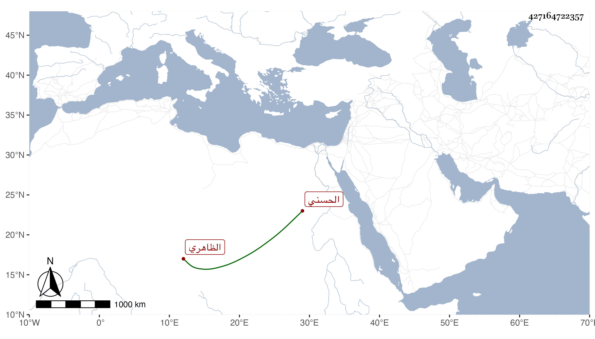

0902Sakhawi.DawLamic.ITO20230111-ara1.EIS1600.427164722357
Biography ID: 427164722357
1030
سمام الحسني الظاهري برقوق . صار خاصكيا في أيام ابن أستاذه الناصر ثم انحط دهرا إلى أن عاد لها في أيام الظاهر ططر ثم أمره بالظاهر جقمق في أوائل أيامه عشرة ، وحج بالركب الأول غير مرة ثم جعله الأشرف من رؤس النوب ثم حاجبا ثانيا عوض نوكار فمات قبل تمام الشهر في ربيع الآخر سنة سبع وخمسين وقد ناف على السبعين تقريبا .
